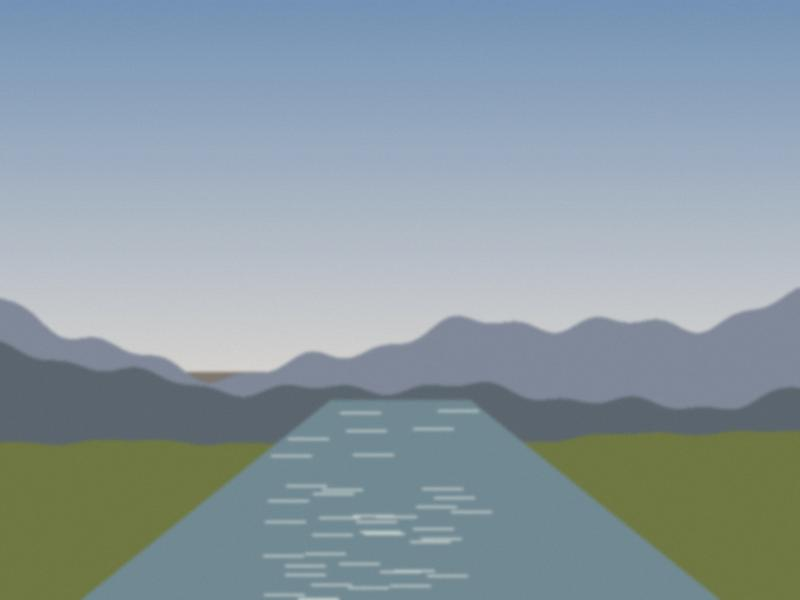
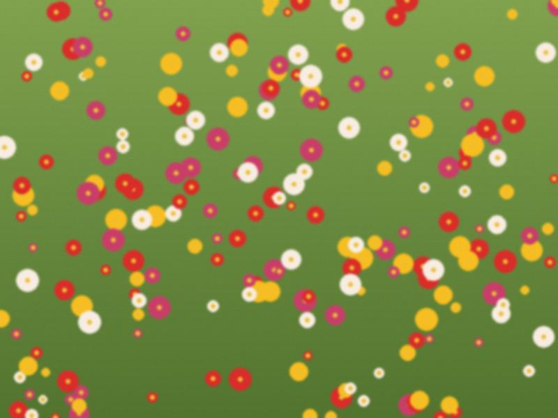
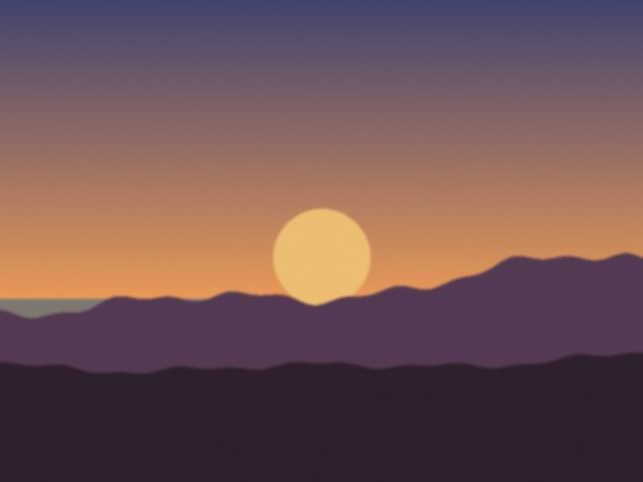

this week the wind brought dust from the steppe and all of talas turned the colour of tea with milk. the cars, the tulips, the sheets on the balconies. the sun was a coin behind frosted glass.
i photographed my grandmother's washing line. every sheet was a different shade of beige. "now i have to wash the same laundry twice," she said. "put that in the paper."

the talas in spring. loud. you can hear it from the road.
the stalls by the opera. red roses for 20 som each, wrapped in cellophane. nobody was buying. everyone was looking.the girls at the paper say the day is "for those who have somebody". i said: i have a camera. they laughed. then the photo editor said: "that's the correct answer".
my first small news item with my name under it, a cat on a roof on the street behind the market. the cat's name is Sultan and he belongs to nobody. the neighbours bring him sausage and fight about who he likes more.
the paper printed it on page 7 next to an ad for winter boots. i bought three copies. grandmother has cut it out and stuck it to the fridge. there's a photo of the cat, tiny, and my name, tiny, and she says it's a big paper.

the newsroom window at 8 in the morning. the view is a car park and a fig tree.the photo editor is a woman with grey hair who looks at my prints for four seconds and says "again". that's the training programme.
first assignment: a new bus stop on the avenue. one photograph. "make it look like it matters", she said. i went back three times. on the third, a man in a green cap sat down on the bench exactly at the right moment, the light hit the glass, and i thought: it matters.